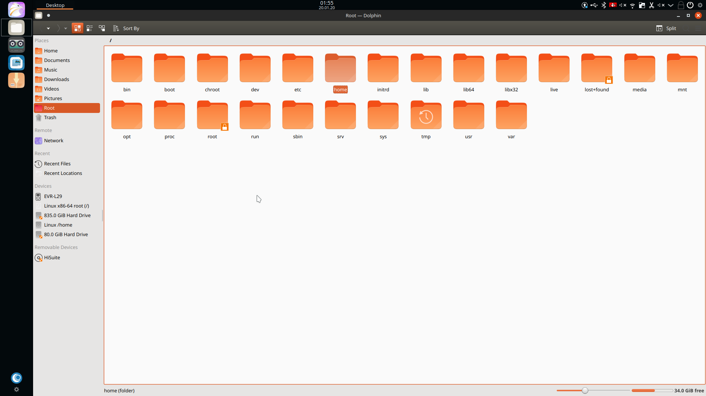

<table border="0">
	<tr>
		<td colspan="2"><h1>Ubuntu</h1></td>
	</tr>
	<tr>
		<td colspan="2">A configuration that will make people converting from Ubuntu feel at home</td>
	</tr>
	<tr>
		<td>
			<i>Menu:</i> inside windows<br/>
			<i>Launcher:</i> Full screen<br/>
			<i>Icons:</i> Suru++<br/>
			<i>Button order:</i> No Yes<br/>
			<i>Mouse click:</i> Double click</p>
		</td>
		<td>
			
		</td>
	</tr>
</table>
